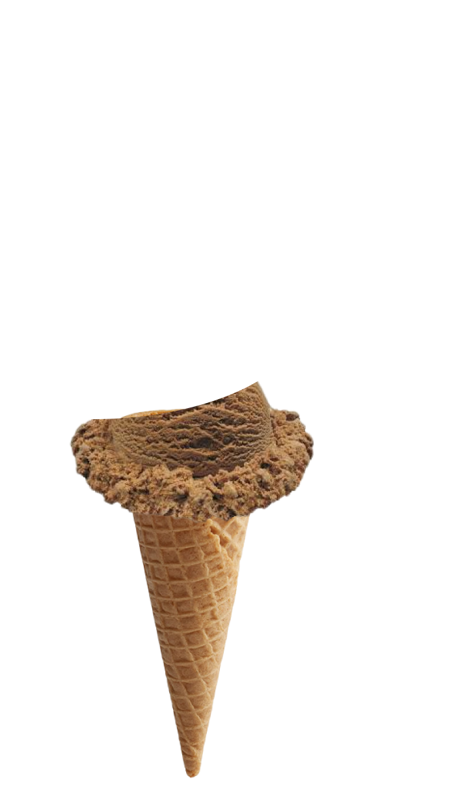
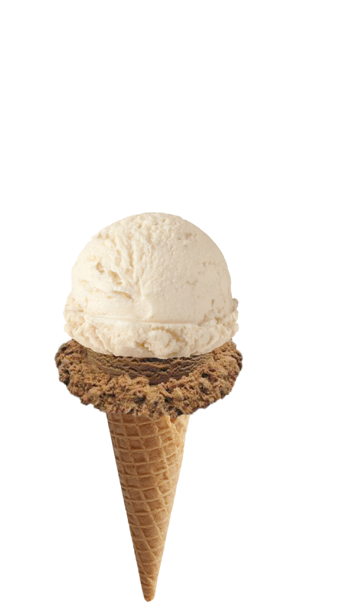
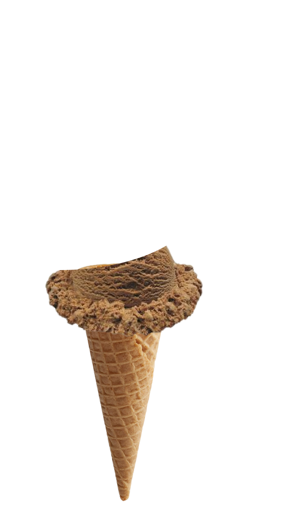
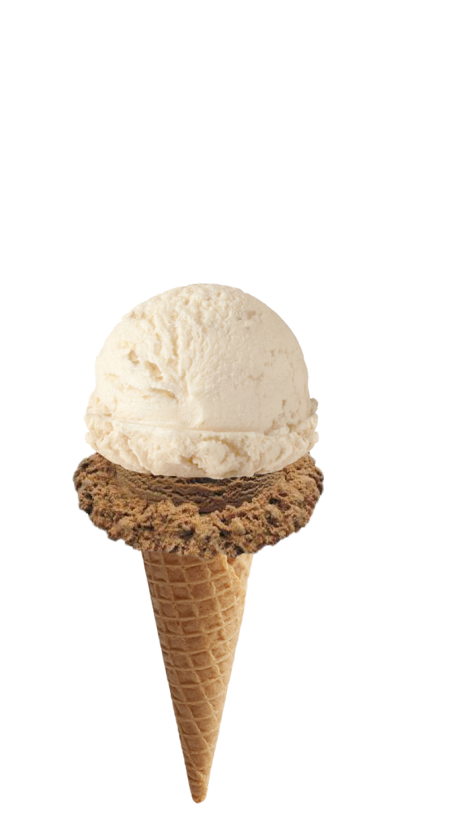

This webzine is an experiment in translation forms. How does ice cream melt, taste, feel on the internet? What does it look like when a treat that is so well known exists across time and space? How does it seem to be MORE TEXT TBD